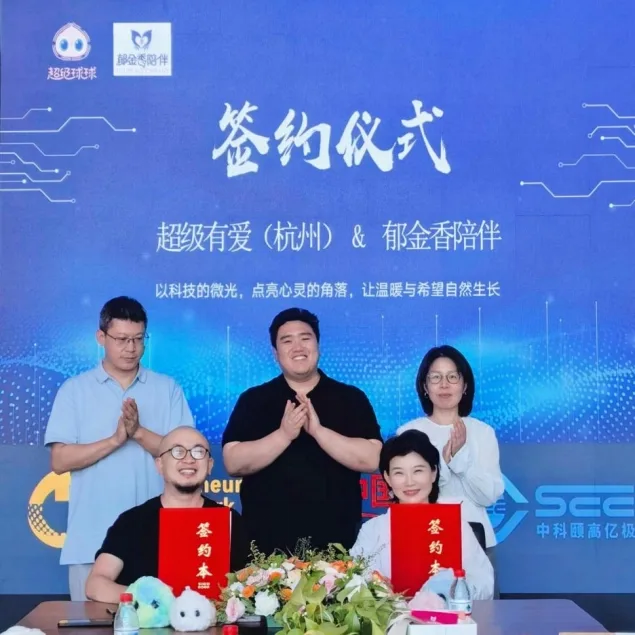
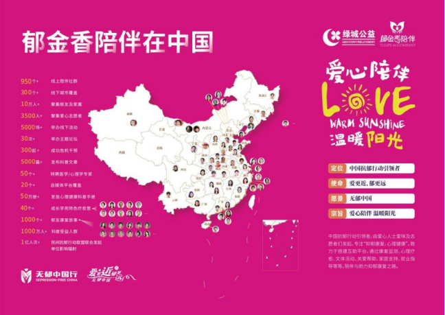
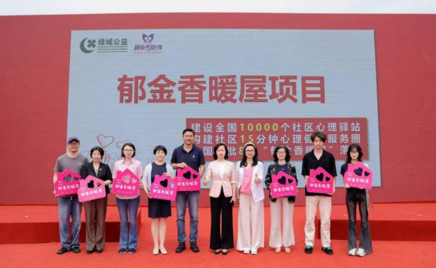
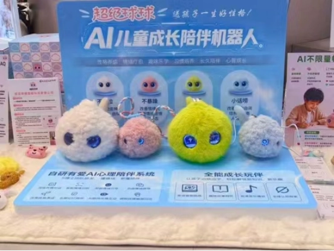
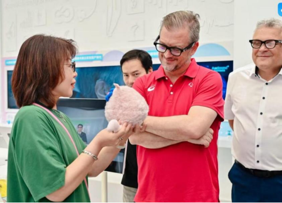

近日，超级球球与郁金香陪伴正式达成战略合作。双方将共同关注有抑郁情绪、孤独感和情绪困扰的人群，探索更有针对性、更贴近真实生活的AI陪伴产品。
签约仪式在杭州未来科技城举办，有爱智能创始人、超级球球AI团队带头人元晓帅博士与郁金香陪伴运营总监朱益伟共同签署战略合作协议，亿极中国董事长陆城宽现场见证。此次签约标志着双方合作正式启动。

抑郁情绪背后，是一个个真实的人。他们需要的，不只是一个答案，更是被听见、被理解，以及在需要的时候得到及时回应。郁金香陪伴十余年来，做的就是这样一件事。
郁金香陪伴长期关注有抑郁情绪的人群及其家庭，目前已建立950多个线上陪伴社群，服务网络覆盖300多个城市，连接10万余名郁友及家属。在长期陪伴中，郁金香积累了丰富的真实需求、陪伴经验、用户基础和志愿者资源。


超级球球是中国AI陪伴机器人行业代表性品牌，专注于将人工智能、心理健康与陪伴场景相结合，围绕情绪识别、共情对话和长期陪伴持续开展技术与产品探索，致力于让科技不只是更聪明，也更温暖、更懂得尊重人的感受。


本次合作中，双方将深入真实用户需求、日常陪伴场景及沟通方式，共同探索AI如何更好地倾听和回应，如何减少不恰当表达带来的伤害，以及如何在尊重隐私和个人边界的前提下，为有抑郁情绪的人提供更加持续、友善的日常陪伴。
未来，双方将依托郁金香覆盖全国的社群和志愿者网络，开展用户共创、产品体验和公益科普，让产品在真实场景中不断被检验和完善。
合作项目的初衷及定位不是以科技替代人与人的连接，更不是让AI替代医生、心理咨询师提供诊断、治疗等专业服务，而是希望科技能够更深度地、更有温度地服务于人。在陪伴暂时缺席、专业支持尚未到达的时刻，可以多一份倾听，多一份理解，也多一个主动寻求帮助的可能。
郁金香陪伴让AI更理解真实的情绪与需求，超级球球让温暖的陪伴有机会跨越时间和空间。双方将共同推出AI陪伴联名品牌“慢慢”。“慢慢”代表一种不催促、不评判、不急于给出答案的陪伴。
世界很快，但情绪需要时间；生活很忙，但总要有人愿意停下来，认真听你说——世界这么忙，慢慢陪伴你。
“慢慢”首款AI陪伴产品将于今年9月20日“郁金香920郁友节”正式发布。
愿每一种情绪都能被认真对待，愿每一个需要陪伴的人，都不必独自面对。